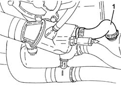

1088D97 Coolant PIPE between EXHAUST GAS/WATER HEAT EXCHANGER and thermost unit - R.R.
- Path
- Procedures > 10 ENGINE > 1088 ENGINE COOLING > 1088D COOLANT PIPES AND HOSES > 1088D97 Coolant PIPE between EXHAUST GAS/WATER HEAT EXCHANGER and thermost unit - R.R.
- Kind
- repair procedure (removal / refitting; the operation number is the code)
- Applies to
- all engines; all production periods
- Interactive page
- https://sloeber94.github.io/elrnDB-fDbl/en/#/2584514
Applies to: all engines; all production periods
 Removing
Removing
 Refitting
RefittingProceed with the removal 1044B10 fuel filter assembly - r + r or replace .
Proceed with the removal 5530B10 battery - r+r .
Proceed with the removal 5530B52 Battery DRIP TRAY/SUPPORT - R.R. .
Proceed with the removal 1060G50 Electro-pneumatically controlled THROTTLE CASING - R.R. .
1. Loosen the band and remove the coolant pipe between the water/exhaust gas heat exchanger and the thermostat unit.

Applies to: all engines; all production periods
Refitting
RemovingPlace the coolant pipe between the exhaust gas/water heat exchanger and the thermostat unit back in its housing and secure it using the bands.
Proceed with the refitting 1060G50 Electro-pneumatically controlled THROTTLE CASING - R.R. .
Proceed with the refitting 5530B52 Battery DRIP TRAY/SUPPORT - R.R. .
Proceed with the refitting 5530B10 battery - r+r .
Proceed with the refitting 1044B10 fuel filter assembly - r + r or replace .
Refill the engine cooling system with coolant 0010T20 coolant change .